Análisis de recorrido · 27 días · 4 países
¿Qué tan intenso es este viaje?
Ritmo día a día, calidad de los 10 hoteles cotizados y evaluación de templos y actividades — más allá de lo que cuesta, cómo se va a sentir vivirlo.


El ritmo en números
Clasificando cada uno de los 27 días según cuánto exige del cuerpo y de la logística — no según cuánto cuesta.
Días de traslado puro
9Días libres / playa
10Días intensos
4Días muy intensos
4Días con guía español
9Días sin ningún guía
17Horas en tránsito*
~32hFronteras cruzadas
3En números redondos: 70% del viaje es traslado o descanso, y solo 30% son días de actividad fuerte. En el papel, 10 hoteles y 7 vuelos suenan agotadores — en la práctica, el ritmo real está bastante equilibrado. El problema no es la cantidad, es dónde se agrupan los días exigentes (ver más abajo). De los 9 días con guía en español, 2 son solo el recibimiento en el aeropuerto (días 1 y 12) — quedan 7 días de guiado real. Hay además 1 día (el santuario de elefantes) con guía en inglés, no en español. *Suma de vuelos + traslados aeropuerto-hotel + inmigración en los 8 días de traslado entre ciudades — no incluye los 2 vuelos internacionales (llegada y salida) por ser muy variables según origen.
Línea de tiempo, día por día
Cada bloque es un día, agrupado por ciudad/hotel. El color indica el nivel de exigencia de ese día.
Bangkok
Chiang Mai
Krabi
Phuket
Siem Reap
Hoi An
Phu Quoc
Ho Chi Minh
Bali Ubud
Bali Sur
El punto blanco en la esquina marca los días con guía en español. Notá que casi no coincide con los días de traslado — el guía acompaña sobre todo en días de visita, no en los vuelos.
El problema no es la cantidad, es el agrupamiento
Los días 2 y 3 (nada más aterrizar) y los días 23-24 (justo antes de terminar el viaje) concentran la mayor exigencia, sin ningún día de descanso de por medio. Y el sitio más importante del recorrido —Angkor— es el que menos tiempo relativo recibe: 5 complejos arqueológicos en un solo día, con apenas 2 noches en Siem Reap. La mayoría de los itinerarios dedican 2-3 días a Angkor.
Cuánto dura cada traslado
Todo esto está incluido en el precio de la agencia (vuelos, traslados aeropuerto-hotel y el auto de Krabi a Phuket). Lo que no está en el PDF es cuánto tiempo real se va en moverse — acá el desglose puerta a puerta de cada uno de los 8 días de cambio de ciudad, sumando vuelo/auto + traslados + inmigración cuando cruza frontera.
| Día | Tramo | Modo | Vuelo / ruta | + Aeropuertos e inmigración | Total puerta a puerta |
|---|---|---|---|---|---|
| 3 | Mercados de Bangkok → Chiang Mai | Auto + avión | ~1h15 vuelo | ~3h ida/vuelta a mercados + ~1h05 aeropuertos | ~5h20 |
| 6 | Chiang Mai → Krabi | Avión directo | ~1h50 | ~50min | ~2h40 |
| 9 | Krabi → Phuket | Auto/van privado | ~3h15 por carretera | — | ~3h15 |
| 12 | Phuket → Siem Reap | Avión directo* | ~1h40 | ~1h10 (Phuket, lejos) + ~1h30 (visa Camboya) | ~4h20 |
| 14 | Siem Reap → Hoi An (vía Danang) | Avión directo* + auto | ~1h55 | ~30min + ~1h15 (visa Vietnam) + ~35min Danang→Hoi An | ~4h15 |
| 17 | Hoi An → Phu Quoc (vía Danang) | Auto + avión | ~1h45 | ~35min Hoi An→Danang + ~1h aeropuerto + ~25min | ~3h45 |
| 21 | Phu Quoc → Ho Chi Minh | Avión directo | ~1h | ~1h20 | ~2h20 |
| 22 | Ho Chi Minh → Bali (Ubud) | Avión directo + auto | ~3h50 | ~55min + ~1h05 Denpasar→Ubud (con visa Indonesia) | ~5h50 |
| Total en tránsito, 8 días de cambio de ciudad | ~32h | ||||
* Phuket→Siem Reap y Siem Reap→Danang tienen pocas frecuencias directas semanales (según una de las fuentes, 3 veces por semana) — si la fecha final no calza con esos días, el trayecto se alarga varias horas por una escala en Bangkok o Ho Chi Minh. Vale la pena confirmarlo con la agencia antes de fijar fechas. Duraciones de vuelo estimadas por ruta; no son horarios de itinerario confirmados.
El día 22 es, por lejos, el más largo del viaje
Ho Chi Minh → Bali suma casi 6 horas puerta a puerta — el vuelo más largo del itinerario (~3h50) más el trámite de inmigración de Indonesia más el traslado Denpasar→Ubud, que con tráfico puede ser largo. Esto también cambia la lectura sobre la noche en Ho Chi Minh: no parece un desperdicio sino un colchón necesario — encadenar el vuelo Phu Quoc→HCM (día 21) con este tramo el mismo día sería arriesgado si hay cualquier demora. Vale la pena mantenerlo, no eliminarlo.
Los 10 hoteles
Categoría y tipo de habitación tal como los cotizó la agencia, con una lectura rápida de qué tan bien encajan para una luna de miel.
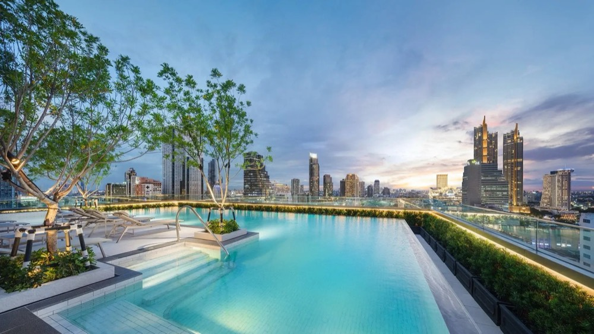
Grande Centre Point Surawong
5* · Deluxe
Cadena confiable en pleno Silom. Buena relación calidad-ubicación para una escala corta de solo 2 noches.
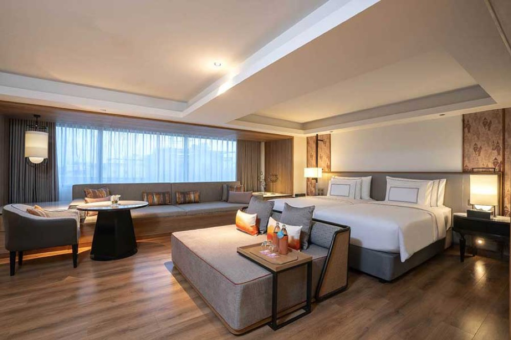
Meliá Chiang Mai
5* · Meliá Room
Resort de cadena junto al río, con piscina amplia. Buen ancla para los días de templos y elefantes.
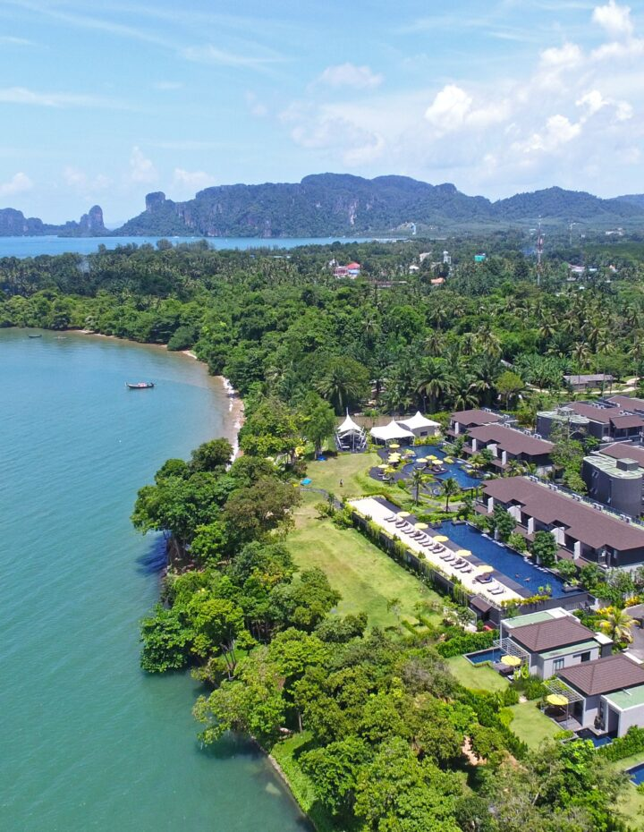
The Shell Sea Krabi
5* · Shellsea Garden
a revisarLa categoría cotizada es vista jardín, no vista al mar. Vale la pena preguntar cuánto cuesta subir a una habitación con vista playa.

Katathani Phuket Beach Resort
5* · Deluxe
el mejor del viajeFrente a la playa Kata Noi. Ampliamente considerado uno de los resorts más consistentes y mejor valorados de todo Phuket.
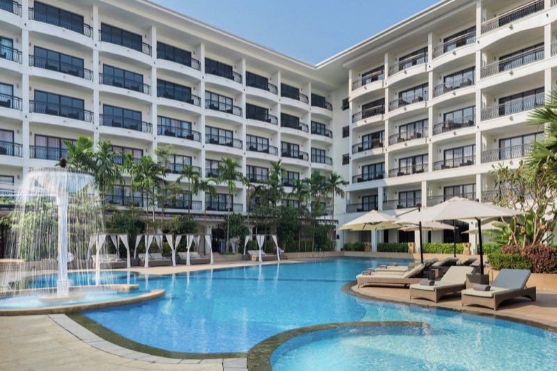
Courtyard by Marriott Siem Reap
5* · Deluxe
Cadena internacional segura, pero más corporativa que boutique. Hay opciones más atmosféricas en Siem Reap si buscan algo más romántico.
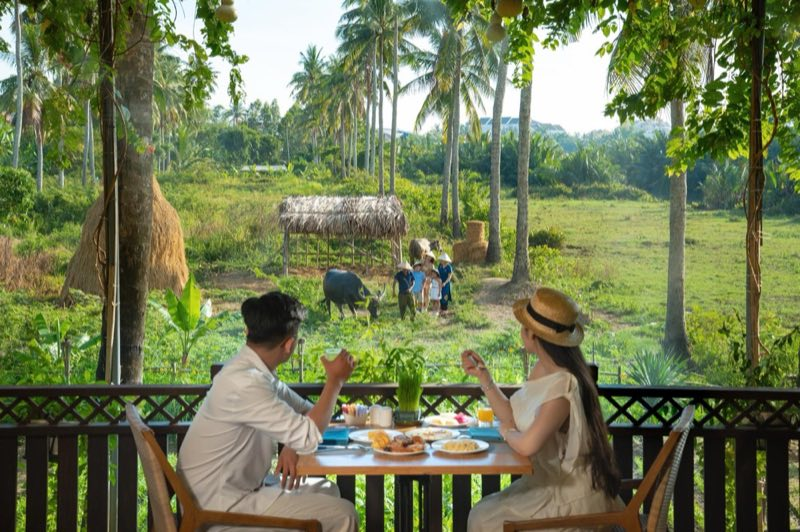
Little Oasis Hotel
5* · Deluxe
Boutique pequeño y bien valorado, tranquilo. Buena opción para desconectar justo después de la maratón de Angkor.
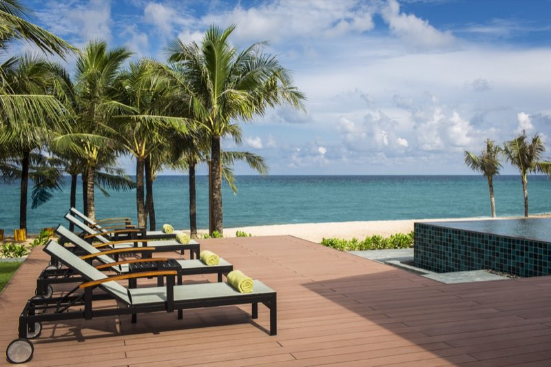
Dusit Princess Moonrise Beach Resort
4*+ · Deluxe Garden
a revisarEs la estadía más larga de todo el viaje (4 noches), pero la única categoría por debajo de 5 estrellas entre los hoteles de playa. Vale preguntar si hay upgrade disponible.
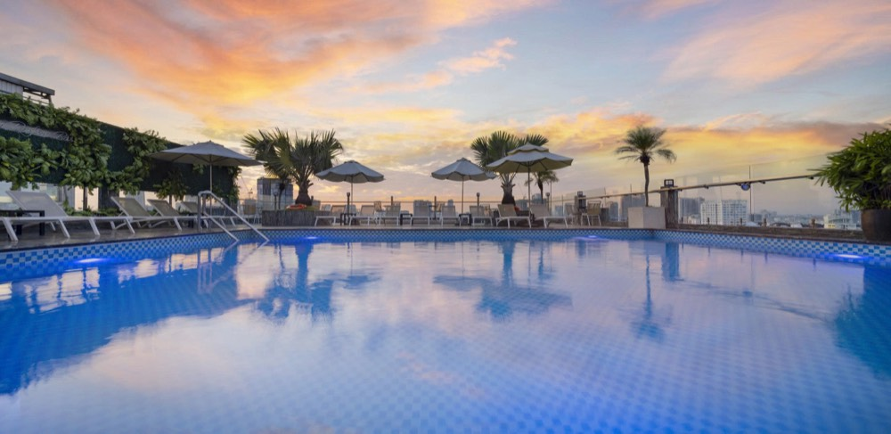
Eden Star Hotel
4* · Premium
Una sola noche de tránsito puro, sin guía ni visita programada. Funciona como escala, no como destino.

Visesa Ubud Resort
5* · Jungle Suite
el más románticoBoutique en plena selva. Probablemente el hotel con más "ambiente de luna de miel" de todo el recorrido.
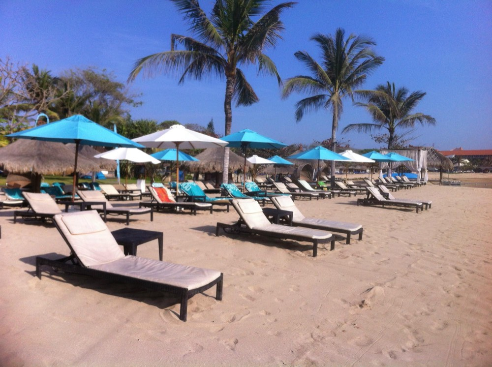
Sol by Meliá (Sol Benoa)
5* · Sol Room
Resort de playa de cadena grande. Cierre cómodo y relajado para los últimos días del viaje.
Templos y actividades clave
Los puntos que más definen la experiencia — y cuánto exigen del cuerpo y del tiempo.
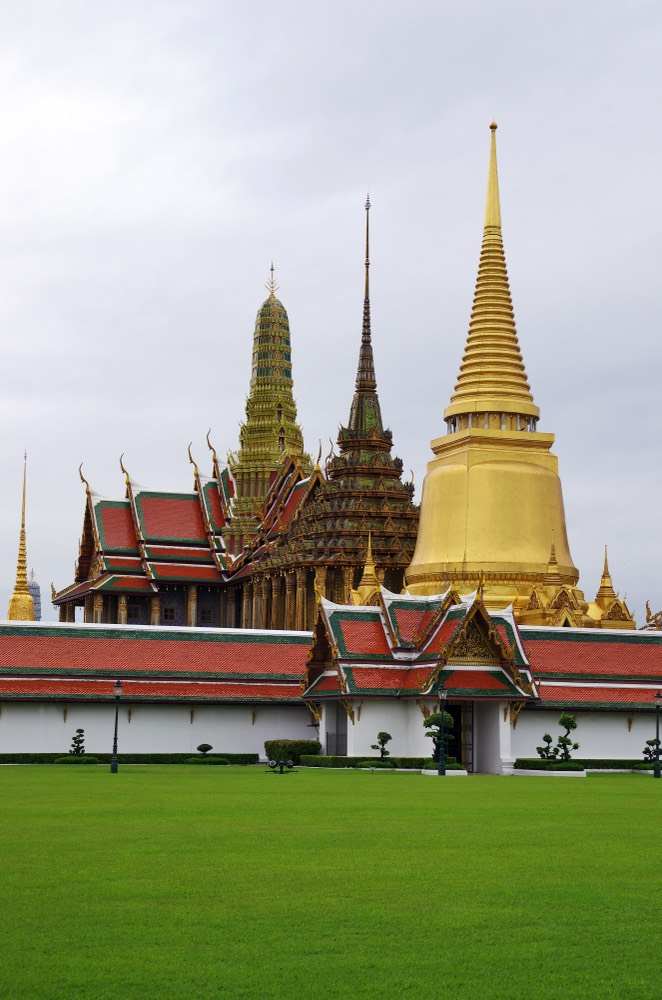
Gran Palacio / Wat Phra Kaew
Día 2 · BangkokEl templo más visitado de Tailandia. Imperdible, pero con mucha gente y código de vestimenta estricto (hombros y rodillas cubiertos).
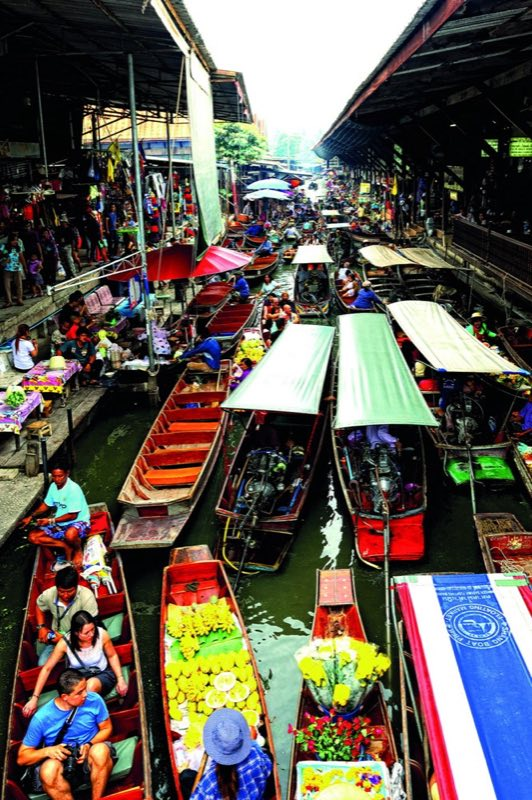
Mercado flotante Damnoen Saduak
Día 3 · BangkokA 80 km de Bangkok, se combina con otro mercado y un vuelo el mismo día — el día más apretado de todo el itinerario.
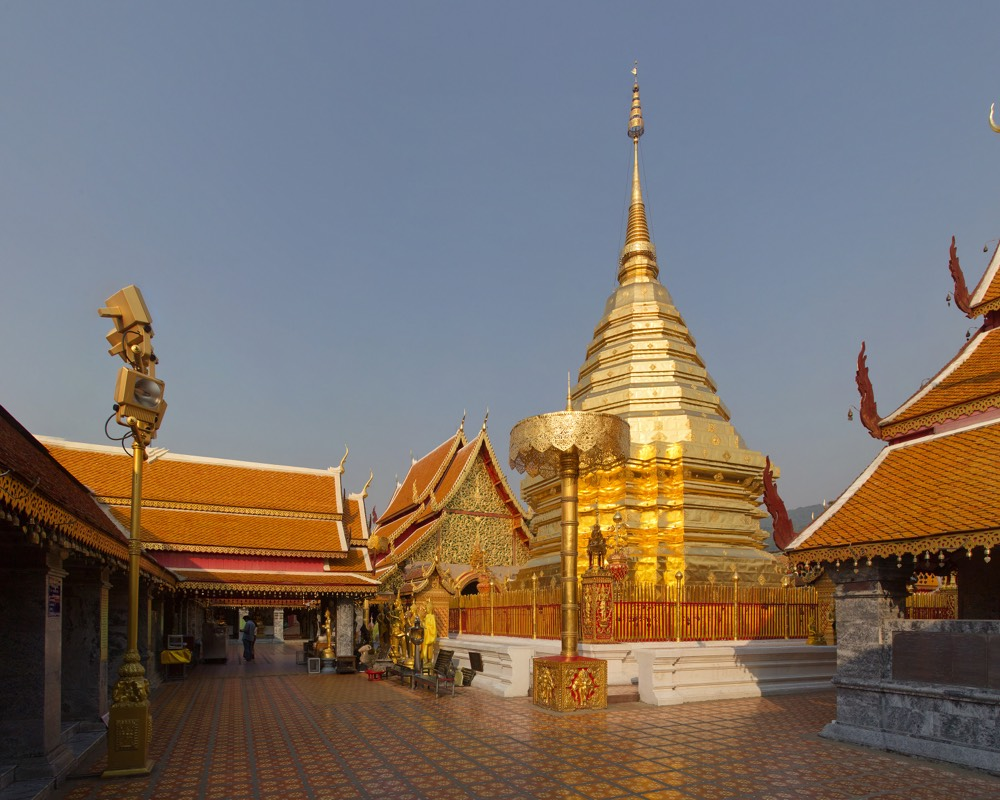
Wat Phra That Doi Suthep
Día 4 · Chiang MaiTemplo dorado de montaña con vistas a la ciudad. Hay que subir unos 300 escalones hasta la cima (o funicular).
Santuario de elefantes
Día 5 · Chiang MaiActividad de día completo, aparentemente ética (alimentación y baño, sin mención de montarlos) — vale confirmar el estándar del santuario puntual antes de reservar.
Angkor Wat
Día 13 · Siem ReapEl templo más grande del mundo, cierre de una jornada con otros 4 complejos el mismo día. El punto más importante del viaje es también el más apurado.
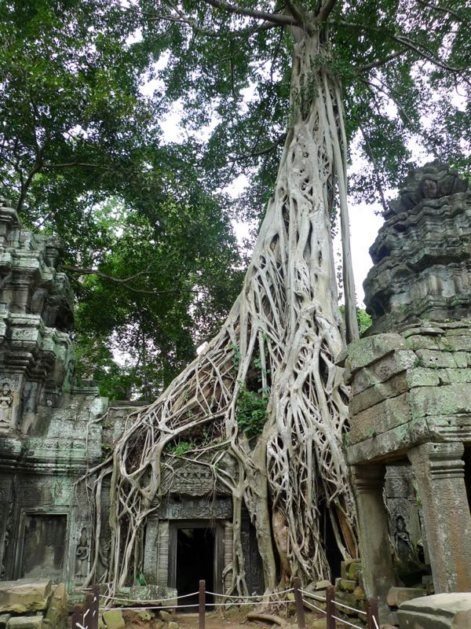
Ta Prohm
Día 13 · Siem ReapRuinas cubiertas por raíces de árboles de la selva (el templo de "Tomb Raider"), visitado la misma tarde que Angkor Wat.
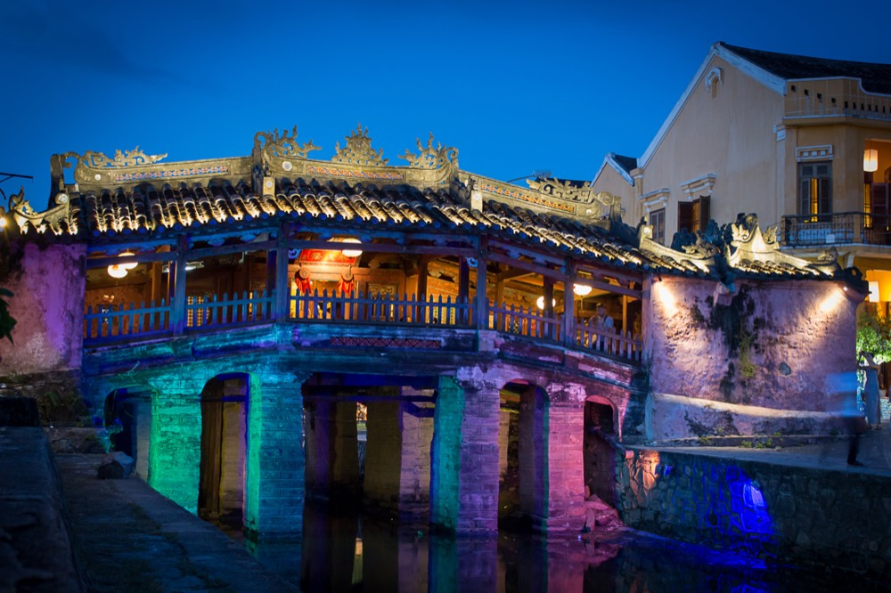
Casco antiguo de Hoi An
Día 15 · Hoi AnCiudad Patrimonio de la Humanidad. Más relajado que Angkor, con clase de cocina y paseo en barca de mimbre incluidos.
Tanah Lot
Día 24 · BaliCierre de un día con otros 3 templos antes (Mengwi, Jatiluwih, Ulun Danu Bratan). Atardecer icónico, pero al final de una jornada larga.
Puntos para revisar con la agencia
- El día 3 es el más exigente del viaje entero: dos mercados alejados entre sí más un vuelo, apenas 48 horas después de haber llegado internacionalmente. Poco margen si algo se atrasa.
- Angkor en un solo día: con solo 2 noches en Siem Reap, cinco complejos arqueológicos se visitan en una sola jornada. Vale la pena preguntar si se puede sumar una noche extra ahí — incluso restando una noche a Phu Quoc, que ya tiene 4.
- Días 23-24 en Bali: otra "maratón de templos" (8 sitios en 2 días), justo después de ya haber hecho varias jornadas similares en Tailandia y Camboya. Riesgo real de fatiga de templos al cierre del viaje.
- Ho Chi Minh, 1 noche sin guía ni visita: a primera vista parece desaprovechada, pero al mirar los tiempos de traslado (ver tabla arriba) el tramo Ho Chi Minh→Bali ya suma ~6h solo, y encadenarlo el mismo día que el vuelo Phu Quoc→HCM sería arriesgado. Esta noche funciona como colchón, no como desperdicio — no la sacaría.
- Inconsistencia en el PDF (día 6): el título del Día 6 dice "vuelo a Krabi" pero el texto describe "vuelo a Phuket" — probablemente un error de una plantilla reciclada.
- Otra inconsistencia (visados): la lista de exclusiones del PDF menciona "gastos del visado a Tailandia, Vietnam, Camboya y Laos" — pero este itinerario no pasa por Laos en ningún momento, sino por Bali/Indonesia, que ni siquiera se menciona. Parece la misma plantilla reciclada del punto anterior. Vale la pena pedir por escrito los requisitos de visa reales para las 4 fronteras que sí cruzan (Tailandia, Camboya, Vietnam, Indonesia).
- Vuelos de baja frecuencia: Phuket→Siem Reap y Siem Reap→Danang tienen pocos vuelos directos por semana — si la fecha final no calza, esos días de traslado se alargan varias horas por una escala.
- Comidas: solo el desayuno está incluido casi todos los días — almuerzo y cena van por cuenta propia en 25 de los 27 días.
- Excursiones opcionales (4 islas en Krabi USD 75/persona, Phi Phi en Phuket USD 85/persona) no están incluidas — si quieren aprovechar más los días de playa "libres", son ~USD 320 extra para los dos.
El veredicto sobre el ritmo
Como itinerario, está bien construido en general: alterna tramos de cultura intensa con bloques reales de descanso en playa (Krabi, Phuket, Phu Quoc, Bali Sur suman 10 días completamente libres), y hasta la noche de tránsito en Ho Chi Minh tiene una razón logística real. El problema no es el volumen ni la logística, es la distribución de la exigencia cultural: se concentra justo al llegar (días 2-3) y justo antes de terminar (días 23-24), y el sitio más importante del viaje —Angkor— es el que recibe proporcionalmente menos tiempo pese a ser uno de los días con más horas de traslado embebidas. Si hay margen para ajustar algo con la agencia antes de confirmar, un día más en Siem Reap es lo que más rendiría — no tocaría Ho Chi Minh ni el resto de los traslados.
Fuentes de las fotos
- Fotografías de hoteles: sitios oficiales de cada propiedad. Fotografías de templos y lugares: Wikimedia Commons (uso libre).